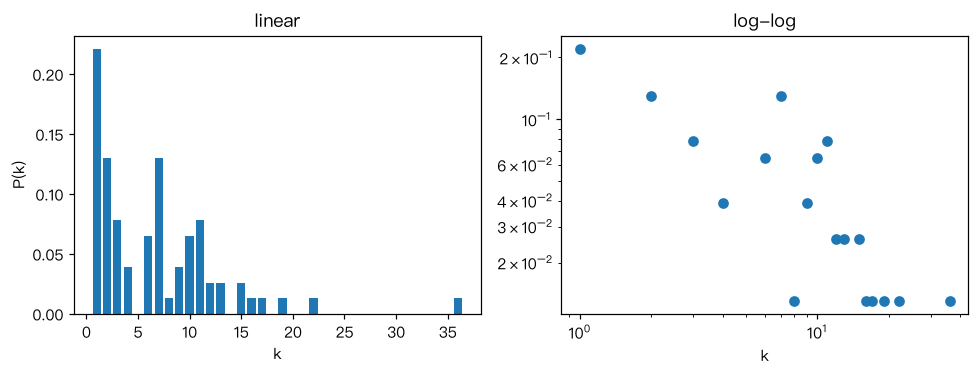

社会网络与生物网络中的社团结构
Community structure in social and biological networks
Girvan M, Newman MEJ
提出按边介数反复删边的分裂式社团发现算法，在人工网络、空手道俱乐部和食物网等数据上找到了有意义的社团。
网络分析的一般流程与工具、研究问题的提出、可复现计算、敏感性分析，以及结果呈现与研究前沿。
Network analysis workflow with NetworkX
从提出问题、读入与清洗数据、选择工具，到指标计算、零模型比较、可视化与报告，用 NetworkX 完成一次完整的网络分析
Research questions, reproducibility and sensitivity analysis
怎样提出可回答的网络研究问题，做到可复算，并用敏感性分析和替代解释检验结论是否稳健
 读入边表、按置信度过滤并取最大连通分支网络分析流程与 NetworkX 实践
读入边表、按置信度过滤并取最大连通分支网络分析流程与 NetworkX 实践
基本拓扑指标、度分布与中心性排名网络分析流程与 NetworkX 实践 社团发现、模块度与结果稳定性网络分析流程与 NetworkX 实践
社团发现、模块度与结果稳定性网络分析流程与 NetworkX 实践 与 ER 随机图和保度随机化零模型比较网络分析流程与 NetworkX 实践
与 ER 随机图和保度随机化零模型比较网络分析流程与 NetworkX 实践 格式互转——边表、邻接矩阵、稀疏矩阵、GraphML 与 JSON 的往返检查网络分析流程与 NetworkX 实践
格式互转——边表、邻接矩阵、稀疏矩阵、GraphML 与 JSON 的往返检查网络分析流程与 NetworkX 实践 五个常见计算陷阱——自环、重边、孤立点、有向性、权重的含义网络分析流程与 NetworkX 实践
五个常见计算陷阱——自环、重边、孤立点、有向性、权重的含义网络分析流程与 NetworkX 实践 大规模网络的计算策略——稀疏矩阵、近似介数与抽样偏倚网络分析流程与 NetworkX 实践
大规模网络的计算策略——稀疏矩阵、近似介数与抽样偏倚网络分析流程与 NetworkX 实践 布局算法比较与布局质量的定量检查网络分析流程与 NetworkX 实践
布局算法比较与布局质量的定量检查网络分析流程与 NetworkX 实践Community structure in social and biological networks
Girvan M, Newman MEJ
提出按边介数反复删边的分裂式社团发现算法，在人工网络、空手道俱乐部和食物网等数据上找到了有意义的社团。
Network motifs: simple building blocks of complex networks
Milo R, Shen-Orr S, Itzkovitz S, Kashtan N, Chklovskii D, Alon U
把“在真实网络中出现次数显著多于随机网络的小子图”定义为网络基序，发现不同领域的网络各有特征性基序。
Evidence for dynamically organized modularity in the yeast protein–protein interaction network
Han J-DJ, Bertin N, Hao T, Goldberg DS, Berriz GF, Zhang LV, et al.
结合共表达把酵母互作组枢纽分为 party hub 与 date hub，提出动态组织的模块性。
Power-law distributions in empirical data
Clauset A, Shalizi CR, Newman MEJ
提出最大似然拟合、KS 选下界、自助法检验与似然比比较的幂律分析流程，并重新检验了 24 个数据集。
Complex network measures of brain connectivity: uses and interpretations
Rubinov M, Sporns O
按神经科学含义整理脑网络常用图论指标及其解读，并发布 Brain Connectivity Toolbox。